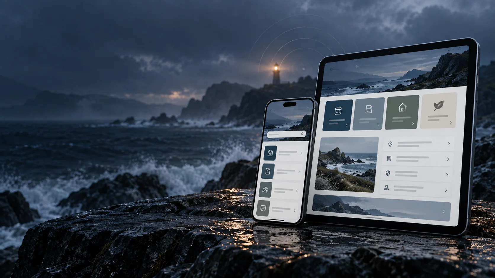

EXPEDITION / 01Completed

SERVICE DESIGN / MOBILE INTERFACE
MUC Digital
Making urban council services easier to navigate through focused booking flows and accessible module interfaces.
Mobile UI · Service flows
UI/UX DESIGNER × FRONTEND DEVELOPER
I design and build digital experiences that bring clarity to complex problems — through thoughtful interfaces and clean code.
Different paths.
Same purpose.
01 / THE JOURNEY
The software world is vast, competitive and constantly moving.
Every storm becomes a lesson.
Every obstacle becomes a new skill.
STORMSOBSTACLESLEARNINGPERSISTENCEGROWTH
02 / EXPEDITIONS
Each expedition began with a real problem — and became something researched, designed and built with purpose.

SERVICE DESIGN / MOBILE INTERFACE
Making urban council services easier to navigate through focused booking flows and accessible module interfaces.
Mobile UI · Service flows
PRODUCT INTERFACE / WEB APPLICATION
Bringing income, expenses, budgets and savings goals into one personal finance workspace.
React · Tailwind · Supabase
FRONTEND DEVELOPMENT / PROPERTY SEARCH
Search properties, explore listing details and save favourites in a client-side application.
React · Vite · React Router
EXPEDITION RECORDS / FIELD NOTES
Problem, process and implementation. These working records bring the decisions behind each expedition into view.
FIELD NOTES / 01
An initial project record, based on the existing portfolio.
Presenting urban council services through a mobile application with clear booking flows.
Research evidence and findings to be added.
The existing portfolio identifies booking flows and accessible module interfaces as the focus.
Implementation details and personal contribution to be added.
Listed as completed in the existing portfolio.
FIELD NOTES / 02
An initial project record, based on the existing portfolio.
Keeping track of income, spending, budgets and savings goals within one application.
Research evidence and findings to be added.
The existing project description records a Figma-first design process and an analytics dashboard.

A React interface with Tailwind styling and Supabase. The documented scope includes income, expenses, budgets, savings goals and analytics.
In progress.
FIELD NOTES / 03
An initial project record, based on the project repository README.
Helping visitors search property listings, explore details and save favourites.
Research evidence and findings to be added.
Design decisions and supporting evidence to be added.
Built with React, Vite and React Router. The README documents property filters, detail pages, galleries and favourites, all running client-side.
The repository documents a property-search application. User testing and outcome evidence remain to be added.

03 / THE EXPLORER
I’m Hansaka, a UI/UX-focused frontend developer and Computer Science undergraduate at IIT. I enjoy turning complex problems into clear, useful digital experiences.
I’m drawn to the space between understanding a problem and building something people can use. Through design and code, I keep learning, asking questions and exploring unfamiliar challenges.
MEET THE EXPLORER04 / SURVIVAL SKILLS
The capabilities I bring to unfamiliar problems — from the first question to a working interface.
05 / THE TRAIL
The work, learning and experiences that shape how I approach the next challenge.
Informatics Institute of Technology (IIT)
Undergraduate studies focused on software development, UI/UX design and modern web technologies.
People’s Leasing and Finance PLC · Colombo 08
System troubleshooting, data management and supporting smooth daily operations with attention to detail.
Gamma Pizza Craft Lanka (Pvt) Ltd · Colombo 02
Handled customer inquiries and order processing in a fast-paced environment, sharpening communication and problem-solving skills.
06 / TOOLS I CARRY
Technologies used across my design, programming and web projects.
07 / THE SIGNAL
Have a project, opportunity or idea?
Send a signal. The next route might start here.
Ganemulla, Sri Lanka · +94 75 227 8588